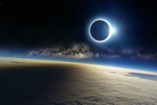

Nuestro paquete "Viajes a ninguna parte" se agota en tiempo record
SurAmerica Airlines está ofreciendo un nuevo «vuelo a ninguna parte» que dará a los residentes australianos hambrientos de viajes la oportunidad de admirar la súper luna de finales de mayo y el eclipse lunar completo desde más de 12.000 metros de altura.
Si esperabas conseguir boletos, no vas a tener suerte: nuestra aerolínea dice que se vendieron en un «tiempo récord», 2 minutos y medio, para ser exactos.
El vuelo de la súper luna es el último de una serie de viajes operados por SurAmerica Airlines que llevan a los viajeros a dar un paseo placentero, antes de devolverlos al mismo lugar de donde despegaron.
Los precios de los boletos para el vuelo de la súper luna comenzaban en AUS$ 499, para un boleto económico (US $ 386), mientras que la clase ejecutiva estaba a la venta por AUS$ 1.499 por boleto (US $ 1.160).
El vuelo promete unas vistas lunares bastante espectaculares. La aerolínea dijo en un comunicado de prensa que está trabajando con la astrónoma Dra. Vanessa Moss para diseñar «la ruta de vuelo óptima sobre el Océano Pacífico». Moss también estará a bordo para entretener a los viajeros con datos e ideas sobre el evento lunar del 26 de mayo, que la NASA llama un «eclipse de súper luna de sangre».